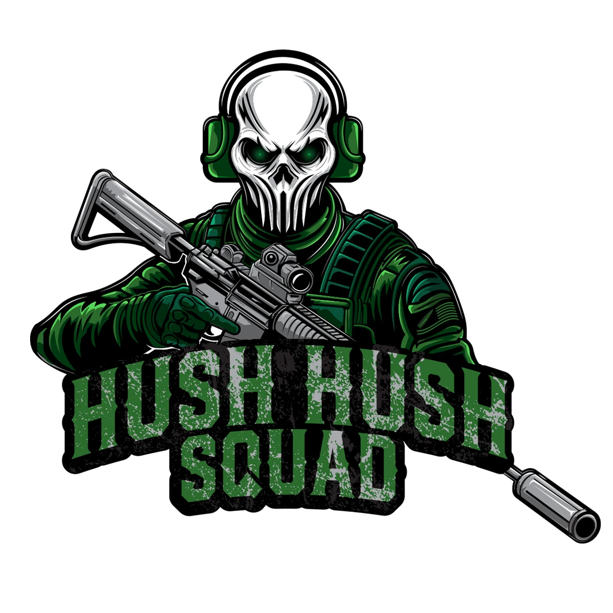
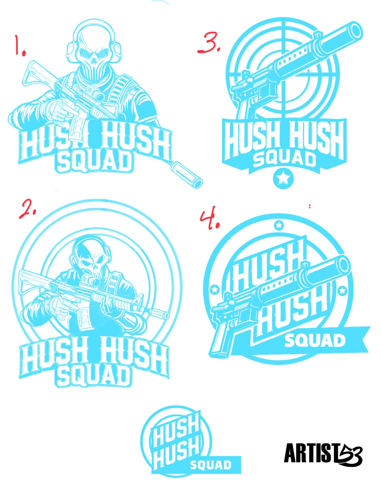

Logo Identity Case Study
HUSH.HUSH.SQUAD
This illustrative logo identity is built around strong lettering, target inspired structure and suppressor imagery for apparel, social media and community branding.
View The ProjectBack To LogosFinal Identity
A Bold Mark Built To Stand Out
The finished identity combines strong typography, tactical details and a compact badge structure. The result is a recognizable illustrative logo system that works across shirts, patches, social graphics and digital applications.

Final Logo System
Finished Logo Variations
The final system includes outlined, black and white and all white logo treatments for flexible use across different applications.


Sketch Development
Early Logo Directions
The complete sketch sheet shows the early concepts explored before the strongest direction was selected and refined into the finished logo system.
